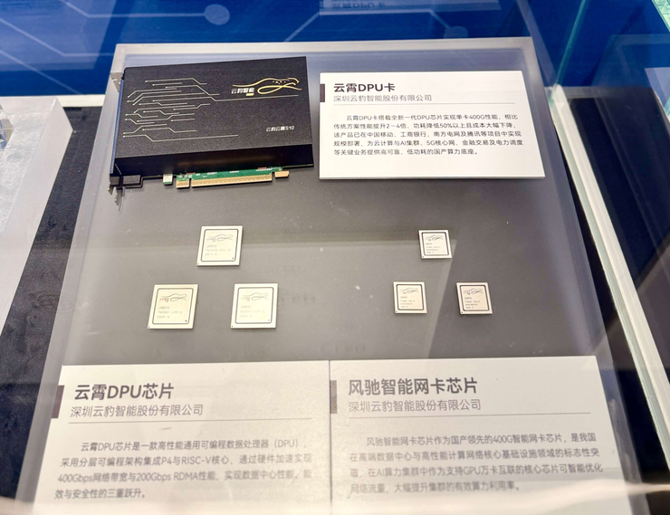
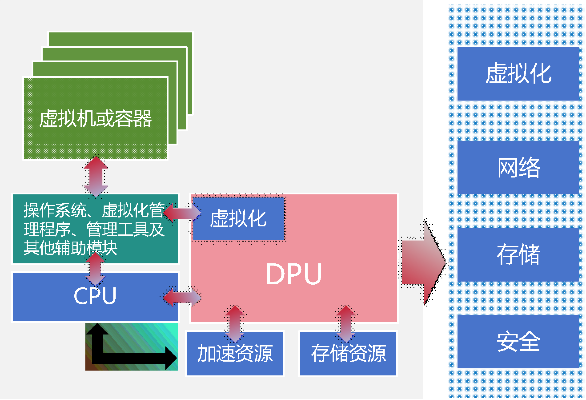

AI's Next Hundred-Billion-Dollar Market: Why the Answer Lies in Networking
That narrative does not align with on-the-ground reality.
When NVIDIA closed its Mellanox acquisition in 2020, it committed to a three-chip roadmap: GPU, CPU, and DPU. The company has steadily built out its networking muscle since. At CES 2026, Jensen Huang's "six-chip combo" included four networking chips.
A clear trend is surfacing: AI infrastructure's bottleneck is migrating from raw compute to networking and orchestration.
With the Agent era, AI systems are pivoting from training to high-frequency inference and always-on operation. GPU utilization now hinges on network efficiency. The DPU is migrating from a data-center optional extra to a core AI infrastructure component.
The question lingers: if NVIDIA placed such an early bet on the DPU, why did the industry spend six years underestimating it?
Only when Cloud Leopard Intelligence filed for what would be China's "first DPU IPO" — and the Shenzhen Stock Exchange accepted the prospectus — did the market begin to grasp that a full-function DPU delivering low latency, high bandwidth, and high-performance data orchestration may be the most undervalued piece of AI infrastructure.
A Large-Chip Sector Undervalued for Six Years
For years, the AI arms race has centered squarely on the GPU: bigger model parameters, faster single-card performance, costlier HBM. These metrics consumed the industry's attention.
As model scale swells, AI clusters are scaling from thousands to tens of thousands of accelerators. More companies are realizing that the GPU is no longer the scarcest resource in the system. The true premium is now on low latency, high bandwidth, and data-flow efficiency.
Algorithm engineers feel the pinch directly. In today's AI stacks, single-node compute is the easiest to source; storage comes next. Bandwidth and low latency are both the hardest to obtain and the most costly. In large-scale training and inference, GPU utilization rates are often mediocre. Even after extensive optimization, system bottlenecks routinely surface at the network and data-orchestration layers.
This explains why NVIDIA has doubled down on networking. Its signal is unambiguous: AI-infrastructure competition is migrating from single-chip performance to system-level efficiency.
Amid this shift, the DPU's role has evolved.
During the CPU-centric cloud-computing era, the DPU mostly offloaded infrastructure tasks — networking, storage, security — as a data-center auxiliary chip. In the Agent era, as AI infrastructure pivots to high-frequency inference, resource orchestration, and continuous scheduling, the DPU is emerging as a system-level hub linking compute, networking, and storage.
In Scale Up configurations, DPUs optimize on-node memory sharing and data flow between CPU and GPU, cutting data-movement latency and boosting heterogeneous compute efficiency. In Scale Out deployments, DPUs manage cross-cluster data orchestration and network offloading — directly affecting GPU utilization rates.
The inference boom has magnified the DPU's importance.
With large-model context windows expanding relentlessly, GPU memory has become a critical cost bottleneck. DPUs can stretch an AI system's effective memory capacity without adding GPU hardware.
At GTC 2026, Jensen Huang showcased the next-generation DPU's KV-Cache tiered-storage capabilities. In the Vera Rubin system, BlueField-4 DPUs handle KV-Cache management and hardware acceleration, creating a "warm-data layer" between GPU HBM and external storage. Each Rubin GPU gets 16 TB of dynamically allocated context space, shattering the context-processing hardware bottleneck and cutting per-token inference cost by 90%.
AI inference context storage and transfer mechanism. Source: CAICT
The DPU is morphing from a data-center optional extra into a critical AI-infrastructure component, catalyzing rapid market expansion.
Per Frost & Sullivan's 2026 special report, the global DPU market expanded from RMB 64.99 billion in 2021 to RMB 196.49 billion in 2025, with a projected 2030 figure of RMB 436.24 billion. China alone is forecast to hit RMB 129.09 billion by 2030, ranking among the fastest-growing AI-infrastructure sub-sectors.
Which raises the question: why did this market never become a true industry focus?
As model size grows, networking becomes the system-wide bottleneck. The Agent era is reshaping AI-infrastructure demands: systems are pivoting from training ever-larger models to running inference at higher frequency, lower cost, and longer duration. Resource orchestration, task scheduling, KV-Cache management, and storage pooling are rising rapidly in importance.
This shift is pushing CPU and DPU demand higher in tandem.
As CPUs shoulder more inference-scheduling and system-management workloads, network offloading, security isolation, virtualization, and storage acceleration must be offloaded to the DPU. The Agent era thus raises both the CPU's and the DPU's strategic importance.
A more fundamental reason for the DPU's under-appreciation: vanishingly few companies can actually build a full-function DPU.
A DPU is far more than a sophisticated NIC. It spans networking, compute, storage, virtualization, and security isolation — a system-level chip. The moat extends beyond the silicon itself to data-plane processing, the software stack, cloud-native readiness, and data-center-scale reliability.
DPU functional diagram. Source: CAICT
Even NVIDIA has endured a long product-evolution cycle in DPUs. Its costly Mellanox acquisition was the cornerstone. Mellanox's early BlueField generations (BF1, BF2) saw limited market uptake; only the post-acquisition BF3 qualified as a genuine DPU success.
Within China, the pool of companies with full-function DPU R&D and volume-production capability is even smaller. Beyond Huawei, Cloud Leopard Intelligence stands as one of the few independent vendors to have productized and scaled a DPU — and the only one delivering a 400 Gbps full-function DPU, on par with NVIDIA's BF3.
Cloud Leopard Intelligence's ability to breach this high-barrier market is rooted in its team's pedigree.
Founder Xiao Qiyang earned a Stanford Ph.D. in electrical engineering at 24. His dissertation solved a three-decade-old theoretical problem in AI, later published as Discrete Neural Computation: A Theoretical Foundation — with a foreword by AI pioneer Marvin Minsky. The work won him the NSF Young Investigator Award. He went on to hold an endowed-chair associate professorship at MIT, focused on networking and distributed computing. Prior to founding Cloud Leopard Intelligence, he was a co-founder of a Silicon Valley network-processor company that Broadcom acquired for $3.7 billion. Cloud Leopard's core team draws from Broadcom, Intel, ARM, Huawei Hisilicon, and Alibaba, spanning network chips, cloud computing, and systems architecture.
Cloud Leopard's team caliber enabled a system-level DPU design. Sources say the first-generation DPU reached customer deployment and volume production at the A0 tape-out stage — a rarity in high-end chips, domestically and globally. In effect, Cloud Leopard moved directly from first silicon into a live data-center environment.
Shipping a product is merely the first step for a large-chip company. Large-scale deployment is the ultimate test.
Cloud Leopard's homegrown DPU is the first domestic chip to hit 400 Gbps. More telling than the spec: the product has entered live data centers, with over 100,000 units deployed commercially across marquee customer use cases — spanning HPC, storage, and network offloading.
Yet Cloud Leopard has stayed comparatively low-profile — both in product development and customer rollout. As a result, the DPU, though always present in the AI-infrastructure stack, rarely broke into the public conversation.
Only after NVIDIA doubled down on networking, the Agent era ushered in a heavy-orchestration phase for AI systems, and Cloud Leopard filed for its landmark DPU IPO did the industry awaken to the DPU's status as AI infrastructure's most overlooked piece.
The Agent Era Triggers a DPU Revaluation
The DPU's importance continues to climb.
For companies with genuine full-function DPU capabilities, the AI market offers not just incremental demand — but substantial headroom for capability spillover.

Leiphone reports that Cloud Leopard Intelligence plans to release a DPU product tailored for AI networking this year, targeting the AI infrastructure market's evolving requirements.
A full-function DPU company's long-term value is determined not by any single product, but by its ability to keep penetrating core infrastructure use cases.
DPUs are already boosting GPU utilization, cutting system latency, and optimizing resource efficiency across data centers, cloud computing, HPC, and large-model inference.
DPU adoption is extending into finance, telecom, and energy. In finance, DPUs bolster the stability and security isolation of core trading systems. In energy, they underpin digital orchestration for power grids and industrial systems.
Sustained technological evolution is equally critical for full-function DPU vendors.
DPU network interface speeds have reached "400 Gbps in volume deployment, 800 Gbps entering commercial use." AI infrastructure's appetite for higher bandwidth and lower latency shows no sign of slowing.
Cloud Leopard Intelligence's next-gen 800 Gbps / 1.6 Tbps DPU products are slated for imminent release, targeting next-generation AI data-center requirements.
Against this competitive backdrop, DPU vendors remain extraordinarily scarce.
CAICT's recent DPU Development Analysis Report ranks NVIDIA first in China's DPU market, powered by its deep chip-architecture heritage, mature data-plane processing, and comprehensive software ecosystem. Cloud Leopard Intelligence ranks second — and first among domestic vendors — as one of the few independent Chinese companies to have achieved DPU volume production and commercial-scale deployment.
As AI infrastructure increasingly prizes system-level capability, the domestic high-end NIC market's competitive landscape is converging. Two categories of players may remain: Cloud Leopard, and everyone else.
This scarcity is drawing wider attention to Cloud Leopard.
Cloud Leopard's DPU product series earned a spot in the "Building a Strong Nation: China Manufacturing's 14th Five-Year Plan Achievements Exhibition" — co-hosted by the National Museum of China and MIIT — where it was featured in the "National Pillar" exhibit area as one of the premier chip showcases.
Cloud Leopard DPU Series Exhibited at the National Museum of China
With domestic AI-infrastructure companies gaining capital-market traction, the DPU sector is also undergoing a value reassessment.
While the GPU market has grown crowded, companies with genuine full-function DPU R&D, volume production, and scaled deployment remain vanishingly few. Since the Shenzhen Stock Exchange accepted its IPO application, Cloud Leopard Intelligence has edged closer to becoming "China's first DPU public company." Its scarcity premium in the domestic AI-infrastructure space is drawing increasing capital-market attention.
Domestic GPU companies that listed in the past two years have typically commanded hundreds of billions in market cap — prompting capital markets to reassess domestic DPU players. As the most representative independent DPU vendor in China, Cloud Leopard's scarcity premium on this hundred-billion-RMB track leaves ample room for upside in the public markets.
The DPU has been elevated to a national-strategic priority. From "chokepoint" to "infrastructure bedrock," it represents the last mile in achieving sovereign control over computing infrastructure. China's DPU companies are entering their own revaluation cycle.
For further discussion on DPU and AI infrastructure companies and industry dynamics, contact the author via WeChat: BENSONEIT.
Original Leiphone article. Reproduction without authorization is prohibited. Refer to the reprint policy for details.

A clear trend is surfacing: AI infrastructure's bottleneck is migrating from raw compute to networking and orchestration.

The DPU is morphing from a data-center optional extra into a critical AI-infrastructure component, catalyzing rapid market expansion.